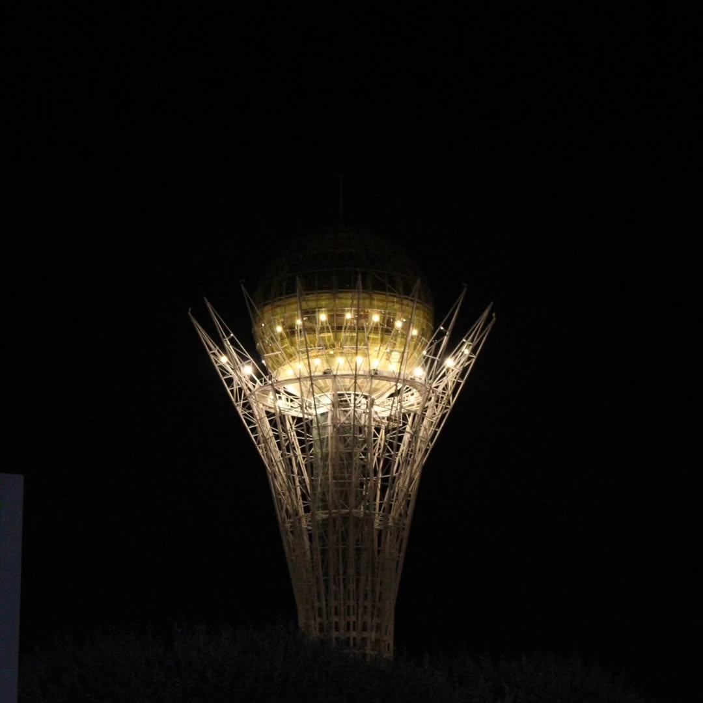
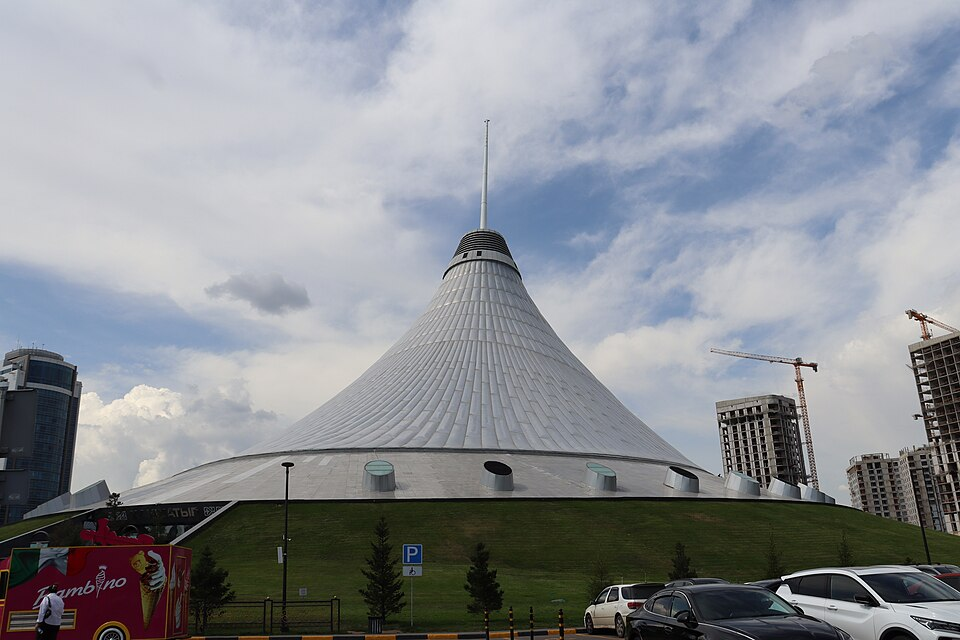

Architecture & Landmarks
- Baiterek: A tower with a distinctive golden sphere.
- Khan Shatyr: A shopping and entertainment centre beneath a tent-shaped roof.
- Palace of Peace and Reconciliation: A pyramid-shaped landmark.

Modern landmarks, open boulevards, and quiet moments beside the Ishim River.
Explore the CityKazakhstan's capital brings together striking architecture and wide public spaces. This guide introduces a few city landmarks and a sample route for exploring them.
Three ways to explore

Look for the golden sphere above the boulevard, then return after dark for a different view of the landmark.
Plan a landmark walk
Discover the tent-shaped shopping and entertainment centre, and make room for a break between city walks.
Make time for a break
Slow down beside the water and notice how greenery, reflections, and modern buildings share the cityscape.
Finish with a walkChoose nearby landmarks together and leave time for walking between them.
Check the forecast before your visit and bring layers for time outdoors.
Balance architecture with a museum visit or a relaxed riverside walk.
A sample itinerary to adapt to your interests.
Start with the architecture around Baiterek and take a walk along Nurzhol Boulevard.
Make time for the National Museum, or choose a shopping break at Khan Shatyr before the next part of your day.
Finish with a walk along the Ishim River and a different perspective on the city.
This is an illustrative route, not a booking or a timetable. Check opening hours and travel arrangements before visiting.
A sample route to adapt to your interests. Check travel times, access, and opening hours before visiting.
| Interest | Place | What to Notice |
|---|---|---|
| Architecture | Baiterek & Nurzhol Boulevard | Shapes, scale, and the city skyline |
| Culture | National Museum | Exhibitions about Kazakhstan's heritage |
| Outdoor spaces | Ishim River embankment | Bridges and riverside views |
Ziyadinkhan is a student in group SE-2501. His assigned pages are this Astana guide and About Us. He worked on the ordered itinerary, team information, and the shared design.